<mat-sidenav-container (backdropClick)="closeNav()">

  <mat-sidenav #sidenav fixedInViewport="true" autoFocus="false" (keydown.escape)="closeNav()" disablecloseNav>
    <mat-toolbar class="sidenav-toolbar mt-4">
      <mat-toolbar-row>

        <span routerLink="/">
          
        </span>

        <span class="fill-remaining-space"></span>

        <span (click)="closeNav()" class="d-block d-sm-none" style="cursor: pointer; margin-top: 8px">
          <i class="fa fa-times menu-icon mt-0"></i>
        </span>

      </mat-toolbar-row>
    </mat-toolbar>
  </mat-sidenav>

  <mat-sidenav-content>

    <mat-toolbar class="tool-bar mt-4 mt-sm-0">
      <mat-toolbar-row>
        <span routerLink="/" class="d-none d-sm-block">
          
        </span>

        <span routerLink="/" class="d-block d-sm-none">
          
        </span>

        <span class="fill-remaining-space"></span>
        <span class="title-font d-none d-sm-block">
          <a mat-button class="mx-3" routerLink="/">{{ 'user.user_core.blog' | translate }}</a>
          <a mat-button class="mx-3" routerLink="/">Mohamed</a>
          <a mat-button class="mx-3" routerLink="/">{{ 'user.user_core.language_label' | translate }}</a>
        </span>
        <span (click)="openNav()" class="d-block d-sm-none" style="cursor: pointer; margin-top: 8px">
          <i class="fa fa-bars menu-icon mt-0"></i>
        </span>

      </mat-toolbar-row>
    </mat-toolbar>

    <div class="main-container mt-3 pt-2" style="min-height: 700px">

      <router-outlet></router-outlet>

    </div>

    <div class="footer" style="padding: 12px 8px 4px 8px">
      <p>footer</p>
    </div>
  </mat-sidenav-content>
</mat-sidenav-container>
